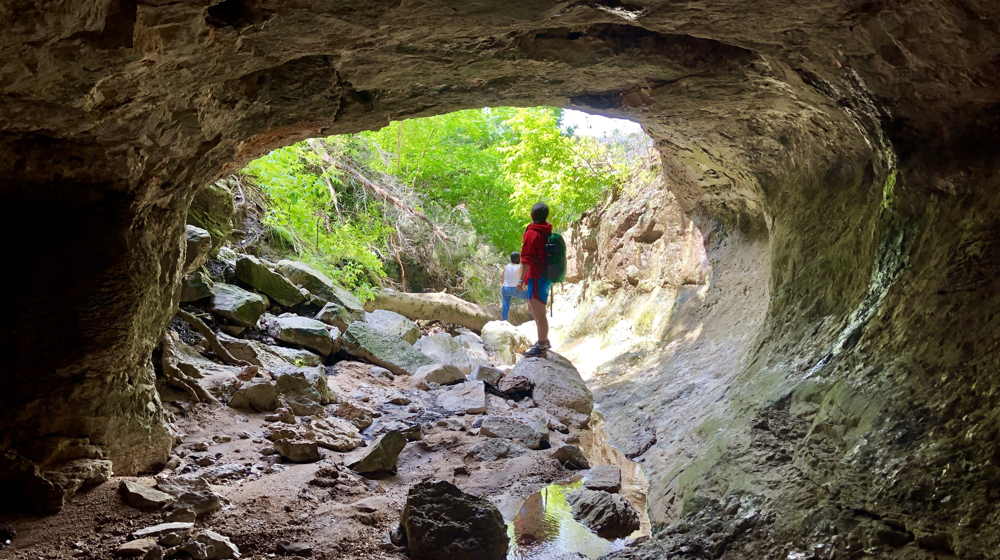

About Me
Howdy! I'm Kara Johnson, a Software Engineer and Technical Artist focused on writing automation scripts and tools that streamline artist workflows and optimize production pipelines.
With a background in software engineering and a passion for supporting artists and developers, I have extensive experience extending digital content creation (DCC) software and collaborating with teams of varying technical abilities. I am highly experienced in writing production code and have served as a release captain for production builds. In addition, several of my released tools are actively being used by artists and developers in the video game industry. Throughout my career, I have developed strong skills in contributing to existing software applications with large user bases and translating complex concepts to others.
Currently, I specialize in building tools with C++ and Python for Unreal Engine 5, Houdini, and Maya, with an emphasis on developing Unreal Editor plugins. My primary passion is troubleshooting technical issues to create valuable tools that support others in their creative endeavors.
Want to chat? Feel free to email me!

Besides working on my side projects, I love playing sports and going on camping and hiking adventures. In my remaining free time, you can find me playing video games (The Last of Us is my favorite), working out at the gym, or strumming my guitar.